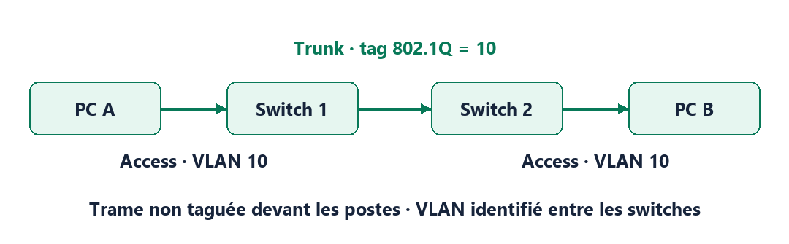

Comprendre le cours
1. Ethernet partagé, Ethernet commuté
Dans un Ethernet historique à câble partagé ou avec des hubs, plusieurs stations utilisent le même support. Deux émissions qui se chevauchent provoquent une collision. Avec CSMA/CD, chacun écoute avant d’émettre. Si une collision est détectée, la station interrompt la transmission et attend une durée aléatoire avant de réessayer.
Sur un lien point à point entre un poste et un commutateur en duplex intégral, les deux appareils peuvent émettre et recevoir en même temps. Le mécanisme de détection de collisions du support partagé ne s’applique plus. Les noms comme 100BASE-TX indiquent notamment le débit nominal et le type de liaison. Vérifie le mode négocié des deux côtés si l’interface rencontre des erreurs.
Un commutateur apprend le port et le VLAN d’une MAC source. Pour transmettre, il recherche ensuite la MAC de destination dans le même VLAN. Si elle est inconnue, il diffuse la trame sur les autres ports qui transportent ce VLAN. Le destinataire peut relever des trames dans une capture sans que sa pile réseau accepte une trame destinée à une autre MAC.
2. Pourquoi le réseau a besoin de STP
Un triangle de commutateurs donne deux chemins entre certains ports. Une trame diffusée peut être recopiée indéfiniment. La même MAC peut alors apparaître tour à tour sur des ports différents et les liens se saturer. STP conserve les câbles redondants et choisit quels ports peuvent transmettre au niveau de la liaison.
- Les commutateurs échangent des BPDU, messages qui décrivent le pont et le chemin connus. Le plus petit identifiant de pont gagne l’élection de la racine. La priorité est comparée avant les éléments de départage.
- Sur un commutateur autre que la racine, le port racine est le meilleur chemin vers le pont racine. Compare d’abord les coûts cumulés, puis les identifiants et ports de départage.
- Pour un segment, un port désigné assure l’accès au meilleur chemin. Les chemins redondants qui créeraient une boucle sont bloqués pour les données. Avec RSTP, retiens notamment le rôle alternate pour un chemin de remplacement.
Le STP historique passe par des états d’écoute et d’apprentissage avant de transmettre. RSTP regroupe ses états en discarding, learning et forwarding. Il accélère la transition sur des liens point à point grâce à des échanges entre voisins et reconnaît les ports de bord configurés pour des postes.
3. Séparer les diffusions avec les VLAN
Un VLAN délimite un réseau local logique sur un ou plusieurs commutateurs. Deux postes peuvent être branchés au même équipement et appartenir à des réseaux locaux différents. Une diffusion ARP du VLAN 10 reste dans le VLAN 10.

Un port access associe le poste à un VLAN. Un trunk transporte plusieurs VLAN. Sur une liaison 802.1Q, le tag permet au voisin de retrouver le VLAN de la trame. Si un VLAN natif circule sans tag, assure-toi que les deux extrémités appliquent la même convention. Vérifie aussi la liste des VLAN autorisés.
Deux réseaux IPv4 distincts ont besoin d’un routeur ou d’une interface de niveau 3 pour communiquer. Pour le premier test, relie deux postes du même VLAN et du même sous-réseau. Pour le deuxième, fais traverser le trunk à ce même trafic. Pour le troisième, vérifie le chemin jusqu’à la passerelle et le chemin retour.
4. Vérifier l’encapsulation dans une capture
Quand tu construis une trame avec Scapy, tu peux choisir indépendamment les champs Ethernet, IPv4 et ICMP. La destination MAC est celle du prochain saut sur ce lien. La destination IPv4 est celle du destinataire final. show() te permet de relire les champs que tu as construits. Une capture contient aussi les champs calculés au moment de l’envoi.
sendp() envoie au niveau de la liaison. srp1() attend une première réponse au niveau de la liaison, avec un délai qu’on peut borner. Dans une VM ou sur un réseau de TP autorisé, choisis explicitement l’interface et vérifie l’IP, la MAC et le port du switch avant d’interpréter un silence.
Sigles et acronymes
- ARP · Address Resolution Protocol
- Recherche de l’adresse MAC correspondant à une IPv4 locale.
Exemple. Pour joindre sa passerelle IPv4, le PC demande quelle adresse MAC lui correspond. - BPDU · Bridge Protocol Data Unit
- Message qu’échangent les switches pour STP.
Exemple. Un switch annonce le pont racine qu’il connaît et le coût pour le joindre. - CSMA/CD · Carrier Sense Multiple Access with Collision Detection
- Ancien mécanisme Ethernet qui détecte les collisions sur un lien partagé.
Exemple. Sur un ancien segment half-duplex, une station arrête sa transmission après une collision. - ICMP · Internet Control Message Protocol
- Protocole de messages de contrôle IP.
Exemple. Le ping envoie une requête Echo et attend une réponse Echo. - IP · Internet Protocol
- Protocole d’adressage et d’acheminement des paquets.
Exemple. Le routeur lit l’IP de destination pour choisir où envoyer le paquet. - IPv4 · Internet Protocol version 4
- Version d’IP à adresses de 32 bits.
Exemple. 192.168.20.1 est une adresse IPv4. - MAC · Media Access Control
- Identifiant de couche liaison d’une interface dans ce cours.
Exemple. Le switch utilise la MAC de destination pour envoyer une trame vers le bon port. - RSTP · Rapid Spanning Tree Protocol
- Version de STP conçue pour converger plus vite.
Exemple. Après une panne, un lien de secours peut être remis en service rapidement. - STP · Spanning Tree Protocol
- Protocole qui évite les boucles entre switches.
Exemple. Dans un triangle, STP écarte un lien redondant jusqu’à ce qu’il soit utile. - VLAN · Virtual Local Area Network
- Réseau local logique séparé sur une infrastructure partagée.
Exemple. Un switch sépare les postes du personnel et ceux des invités dans deux VLAN.
Du cours aux TD et TP
Questions TD & TP
Application du poly · Choisir le lien qui reste en secours
Exemple d’application. Trois commutateurs A, B et C forment un triangle. A a l’identifiant le plus petit. Les liens directs ont le même coût et B a un identifiant plus petit que C. Quel port est bloqué ?
- A gagne l’élection et devient la racine. B et C choisissent chacun leur port vers A. Passer par l’autre commutateur ajouterait un lien et donc du coût.
- Sur B–C, leurs coûts vers A sont égaux. L’identifiant de B départage. Le port de B est désigné et celui de C reste en secours.
- Si A–C tombe, recalcule les chemins. C ne voit plus A en direct et peut atteindre A via B. Dans une maquette, vérifie d’abord le pont racine, puis les rôles de ports avec
show spanning-tree.
Application du poly · Expliquer la traversée du trunk
Exemple d’application. Deux postes distants sont dans le VLAN 10 et tentent de communiquer. Le VLAN 20 partage le même trunk. Qu’observer devant les postes et entre les deux switches ?
- Place les deux ports de poste en access VLAN 10. Vérifie que le VLAN existe localement aux deux bouts. Entre les switches, vérifie le mode trunk et que 10 figure parmi les VLAN autorisés.
- Suis une demande ARP. Elle est sans tag devant les postes, puis porte le VLAN 10 entre les commutateurs selon la configuration du schéma. Elle ne doit pas ressortir sur un port access du VLAN 20.
- Si les deux postes peuvent parler sur le même switch sans pouvoir traverser le trunk, regarde
show interfaces trunketshow spanning-tree vlan 10. Une absence sur le trunk peut venir d’un VLAN filtré ou d’un chemin bloqué.
TP7, questions 6 à 8 · Construire le ping au niveau Ethernet
Énoncé. Construire une requête ping vers le deuxième poste, l’envoyer pendant que Wireshark capture, puis renvoyer la même trame en demandant à Scapy d’attendre une réponse.
- Dans la maquette, relève les MAC et IP des deux interfaces. Construis
Ether(src=mac_a, dst=mac_b)/IP(src=ip_a, dst=ip_b)/ICMP(type=8). Donne à chaque variable la valeur du poste correspondant. - Lance la capture des deux côtés, puis
sendp(trame, iface=interface). Dans Wireshark, filtreicmp. La requête est de type 8 et la réponse attendue de type 0. Compare les adresses sur les deux lignes. - Pour récupérer une réponse dans Scapy, essaie
reponse = srp1(trame, iface=interface, timeout=3). Si elle est absente, distingue sur la capture une requête jamais arrivée d’une requête arrivée sans réponse.
TP7 · Une trame capturée peut-elle rester sans réponse ?
Énoncé. Reprendre la trame avec une MAC de destination fictive, en gardant l’IP du deuxième poste. Expliquer pourquoi une capture peut la montrer sur le poste cible.
- Change uniquement la MAC de destination avec une MAC unicast absente de la table du switch. Le commutateur traite alors la trame comme un unicast inconnu et peut la recopier sur plusieurs ports de ce VLAN.
- Le poste cible peut la voir dans une capture en mode promiscuité. Compare la MAC de destination à celle de ce poste. Si elles diffèrent, il est cohérent que la pile réseau ne traite pas la requête ICMP.
- Refais l’expérience avec la MAC correcte, puis avec une capture au même endroit. La différence entre les deux essais permet de distinguer la réception physique du traitement du paquet.